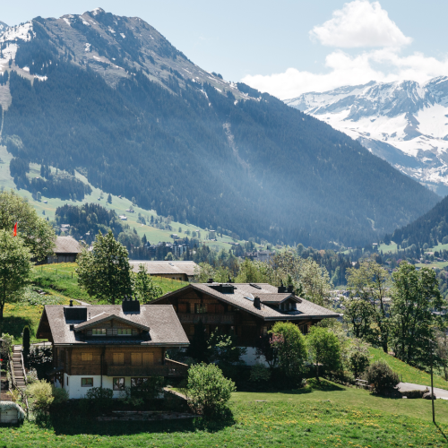
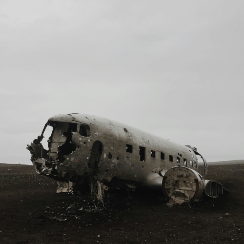
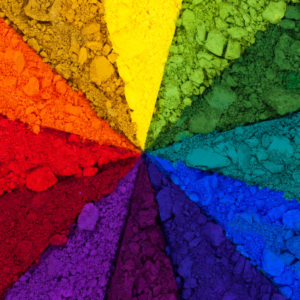
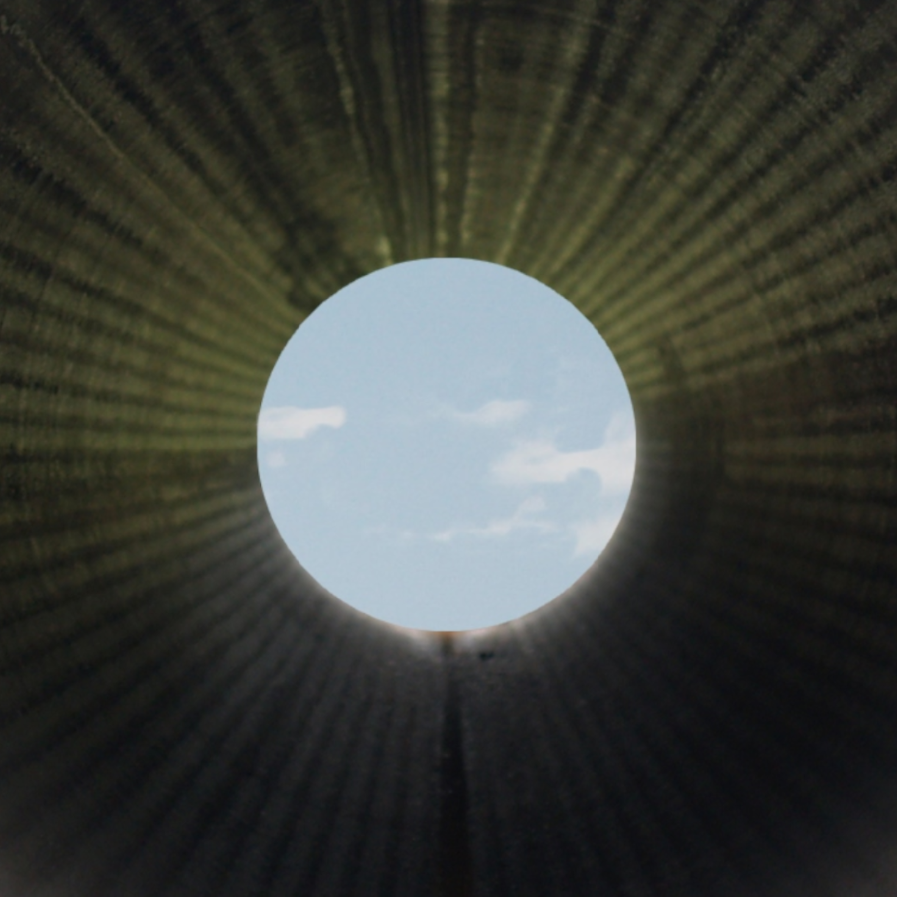
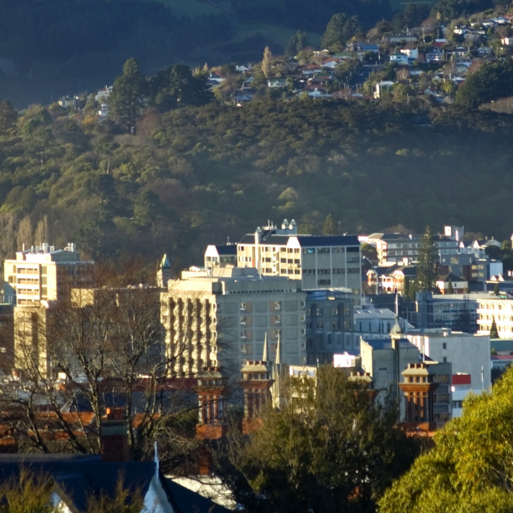
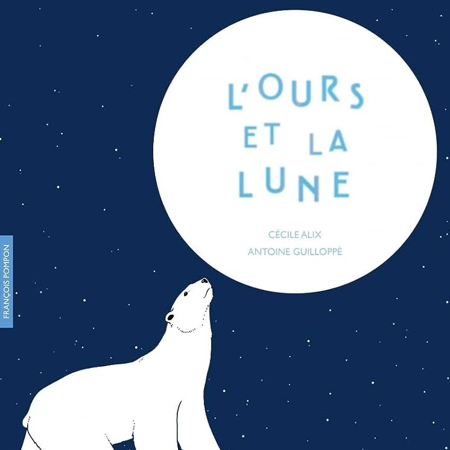

MONTAGE SON AUDIOVISUEL
Devant Mes Yeux réalisé par Julian Aïdan
L’échappée réalisé par Marie Mercier
Roubaix tisse toujours réalisé par Emma Delescluse
Cognition réalisé par Anne-Flore Berger et Edouard Berger
Linnmon Adils réalisé par Athénaïs Besnard
PROJETS PERSONNELS (REALISATION, MONTAGE SON)
L’Eclosion
Vagues à l’âme
CREATIONS RADIOPHONIQUES

Le Nid de Sophie
Documentaire radiophonique réalisé en collaboration avec Clément L’Hôte

Altitude Zéro
Création sonore réalisée en collaboration avec Jeanne Bert, Eléonore Dagnet et
Clément l’Hôte

Couleur
Création sonore autour du thème “Couleur” dans le cadre du concours Louis-
Lumière

Couleur
Création sonore autour du thème “Intérieur/Extérieur” dans le cadre du concours
Louis-Lumière

Ville/Campagne
Création sonore autour du thème “Ville/Campagne” dans le cadre du concours
Louis-Lumière

L’Ours et la Lune
Collaboration avec les élèves de l’école élémentaire de Oncy-sur-école